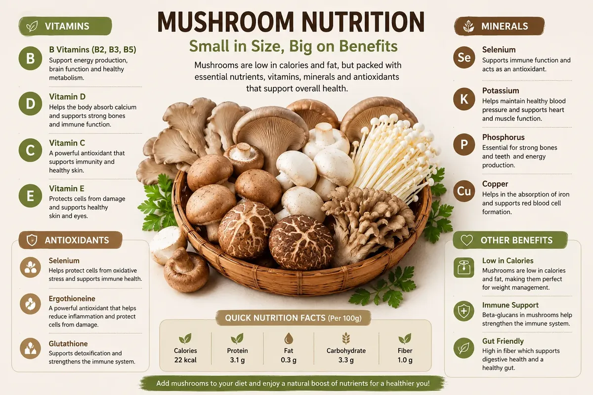
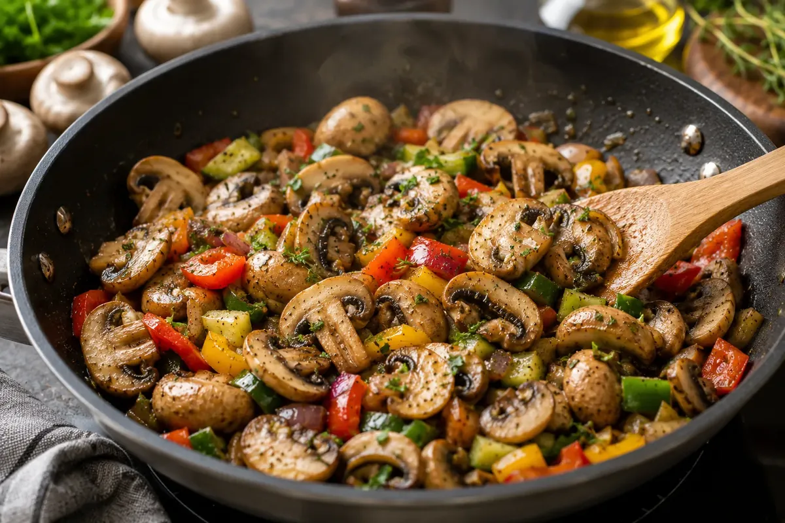

Introduction
For many people, mushrooms are simply another ingredient added to pizzas, soups, pasta, or stir-fries. But these humble fungi offer much more than great flavor. Packed with vitamins, minerals, antioxidants, and dietary fiber, mushrooms have become one of the most popular foods among nutritionists, chefs, and health-conscious individuals worldwide.
Whether you enjoy button mushrooms in your salad, shiitake in Asian dishes, or oyster mushrooms in curries, every variety contributes valuable nutrients to your diet.
So, what makes mushrooms so special?
Let's explore 10 potential health benefits of mushrooms and discover why they're considered one of nature's most nutritious foods.
Why Are Mushrooms So Popular?
Unlike many vegetables, mushrooms have a naturally rich umami flavor, often called the "fifth taste." This makes them an excellent ingredient for creating satisfying meals without relying heavily on added fats or excessive salt.
They're also:
Naturally low in calories
Low in fat
Versatile in cooking
Easy to prepare
Available throughout the year
These qualities make mushrooms suitable for a wide variety of healthy eating patterns.

1. Naturally Low in Calories
One of the biggest advantages of mushrooms is that they're naturally low in calories while adding plenty of volume and flavor to meals.
Replacing part of the meat or refined carbohydrates in a dish with mushrooms can help create satisfying meals without significantly increasing calorie intake.
2. Rich in Antioxidants
Mushrooms contain naturally occurring antioxidants, including ergothioneine and glutathione, which help protect cells from oxidative stress.
Oxidative stress occurs naturally in the body and is influenced by factors such as pollution, smoking, and normal metabolism. Eating a variety of antioxidant-rich foods contributes to an overall healthy diet.
3. Source of B Vitamins
Many edible mushrooms provide important B vitamins, including:
Riboflavin (Vitamin B2)
Niacin (Vitamin B3)
Pantothenic Acid (Vitamin B5)
These vitamins help the body convert food into energy and support normal nervous system function.
4. Contains Important Minerals
Mushrooms naturally contain minerals such as:
Selenium
Potassium
Copper
Phosphorus
These minerals play important roles in normal body functions, including muscle function, fluid balance, and enzyme activity.
5. Adds Dietary Fiber to Your Diet
Mushrooms contain dietary fiber, including beta-glucans found in some varieties.
Fiber contributes to digestive health and can help you feel satisfied after meals as part of a balanced diet.
Including a variety of fiber-rich foods—including vegetables, fruits, legumes, whole grains, and mushrooms—supports overall digestive wellness.

6. Supports a Balanced Diet
Because mushrooms are nutrient-dense and low in calories, they fit easily into many eating patterns, including:
Vegetarian diets
Flexitarian diets
Mediterranean-style diets
Calorie-conscious meal plans
Their versatility makes it easier to prepare balanced meals without sacrificing flavor.
7. May Contribute to Normal Immune Function
Certain mushroom varieties naturally contain beta-glucans along with nutrients such as selenium and B vitamins.
These nutrients contribute to the normal functioning of the immune system as part of a varied and balanced diet.
It's important to remember that no single food can "boost" immunity overnight. A healthy immune system depends on overall lifestyle, including nutrition, sleep, physical activity, and stress management.
8. Easy Way to Eat More Vegetables
Many people struggle to include enough vegetables in their daily meals.
Adding mushrooms to:
Omelets
Sandwiches
Pasta
Rice dishes
Soups
Curries
Pizza
Stir-fries
is an easy way to increase vegetable intake while enhancing flavor.
9. Versatile in Every Cuisine
One of the reasons mushrooms are loved worldwide is their incredible versatility.
They work beautifully in:
Indian curries
Italian pasta
Korean stir-fries
Japanese rice bowls
Chinese noodles
Thai curry
Salads
Sandwiches
Grilled dishes
Whether you're cooking a simple lunch or an elaborate dinner, mushrooms fit naturally into almost every cuisine.
10. Delicious Without Being Complicated
Healthy food doesn't have to be boring.
Mushrooms cook quickly, absorb seasonings beautifully, and pair well with herbs, garlic, olive oil, soy sauce, butter, spices, and fresh vegetables.
Even beginner cooks can prepare delicious mushroom dishes in under 30 minutes.
Which Mushrooms Should You Try?
Some of the most popular edible mushrooms include:
White Button Mushrooms
Oyster Mushrooms
Shiitake Mushrooms
Enoki Mushrooms
Maitake Mushrooms
Portobello Mushrooms
Cremini Mushrooms
Each variety has its own unique texture, flavor, and nutritional profile.
Tips for Buying Fresh Mushrooms
Choose mushrooms that are:
Firm
Dry
Free from dark slimy spots
Pleasant smelling
Store them in a paper bag in the refrigerator and wash them just before cooking.
Frequently Asked Questions
Are mushrooms healthy?
Yes. Mushrooms provide vitamins, minerals, antioxidants, dietary fiber, and other nutrients that make them a nutritious addition to a balanced diet.
Can I eat mushrooms every day?
For most healthy individuals, edible mushrooms can be enjoyed regularly as part of a varied diet.
Which mushroom is the healthiest?
Different mushrooms provide different nutrients. Including a variety of edible mushrooms offers the widest nutritional benefits.
Are mushrooms good for weight management?
Because they're naturally low in calories and add volume to meals, mushrooms can fit well into balanced eating plans aimed at weight management.
Do mushrooms contain protein?
Yes, mushrooms contain protein, but they are not considered a high-protein food compared with paneer, tofu, legumes, or beans.
Health note: Mushrooms can provide useful nutrients as part of a balanced diet, but their effects should not be viewed as a treatment or cure for any health condition. Individual nutritional needs vary.
Final Thoughts
Mushrooms are much more than a flavorful ingredient—they're a nutritious, versatile food that can easily become part of everyday meals. From providing vitamins, minerals, and antioxidants to adding texture and depth to countless dishes, mushrooms offer benefits that go beyond taste.
Rather than relying on one "superfood," building healthy eating habits around a variety of nutrient-rich foods—including mushrooms, fruits, vegetables, whole grains, legumes, and quality protein sources—is one of the best ways to support long-term health.
So the next time you're planning your meals, don't overlook the mushroom aisle. Your taste buds—and your plate—will thank you.